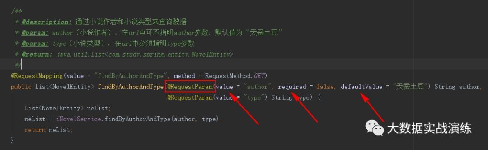
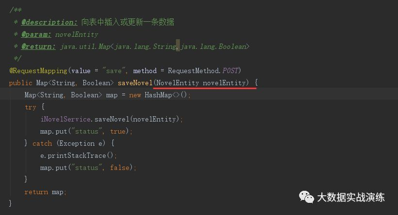
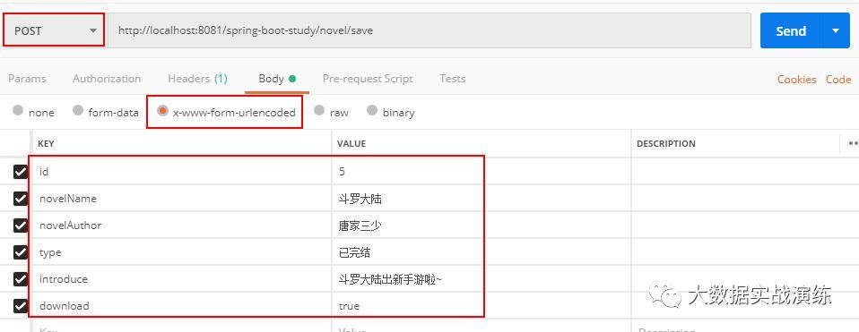
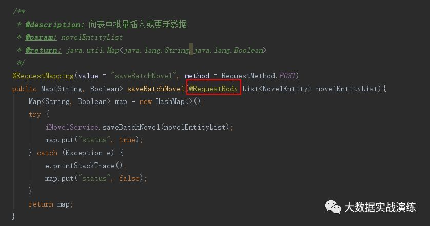
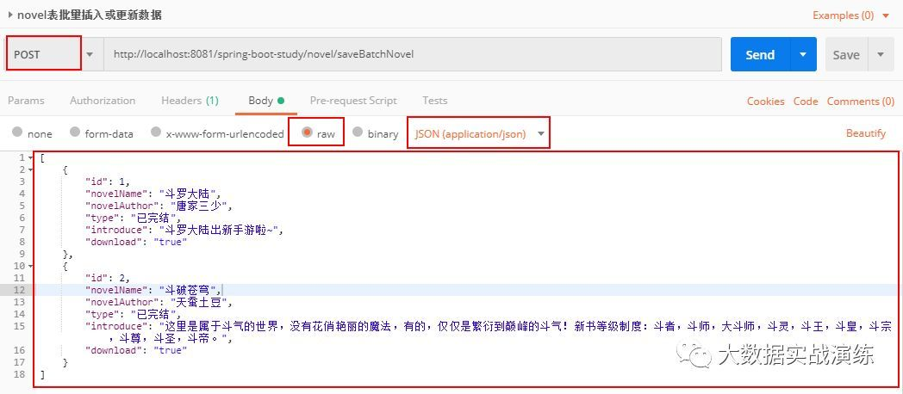
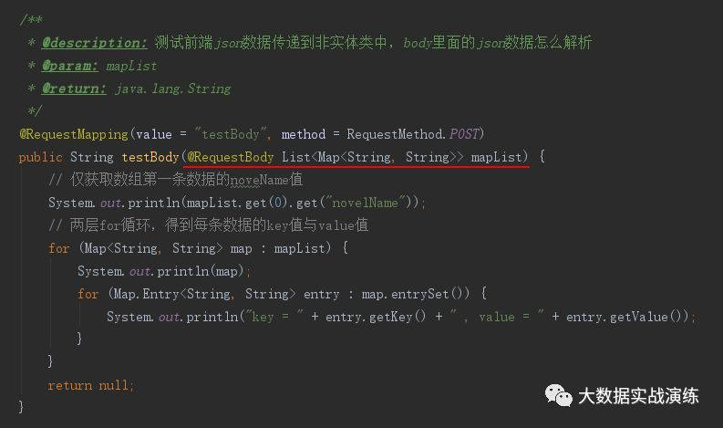
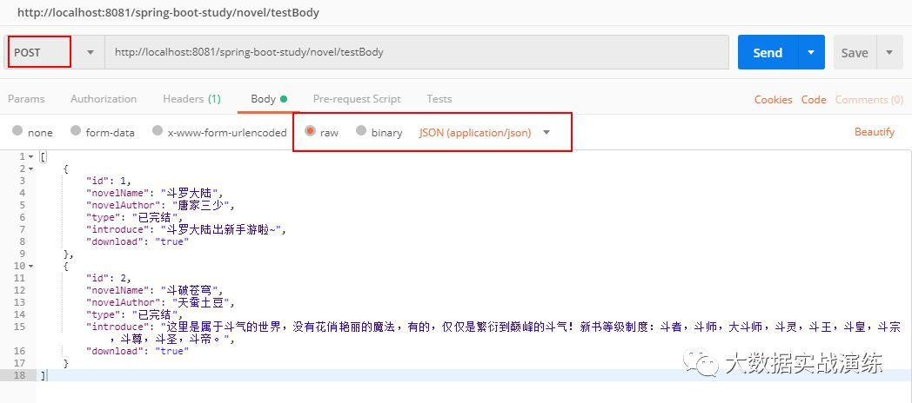
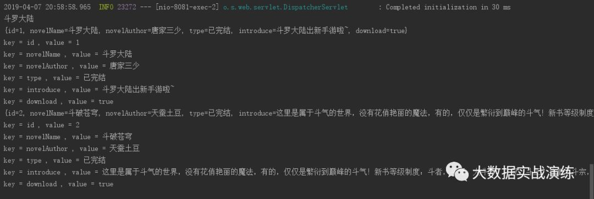

前言
一直有这么一个疑问：在使用 postman 工具测试 api 接口的时候，如何使用 json 字符串传值呢，而不是使用 x-www-form-urlencoded 类型，毕竟通过 key-value 传值是有局限性的。假如我要测试批量插入数据的接口呢，使用 x-www-form-urlencoded 方法根本就不适用于这种场景。
那么如何通过 postman 工具使用 json 字符串传值呢，这里就引申出来了 spring 的两个注解：
- @RequestParam
- @RequestBody
总而言之，这两个注解都可以在后台接收参数，但是使用场景不一样。继续往下看。
@RequestParam
先介绍一下 @RequestParam 的使用场景：
注解 @RequestParam 接收的参数是来自 requestHeader 中，即请求头。通常用于 GET 请求，比如常见的 url：http://localhost:8081/spring-boot-study/novel/findByAuthorAndType?author=唐家三少&type=已完结 ，其在 Controller 层的写法如下图所示：

@RequestParam 有三个配置参数：
required：表示是否必须，默认为true，必须。defaultValue：可设置请求参数的默认值。value：为接收url的参数名（相当于key值）。
@RequestParam 用来处理 Content-Type 为 application/x-www-form-urlencoded 编码的内容，Content-Type 默认为该属性。@RequestParam 也可用于其它类型的请求，例如：POST、DELETE 等请求。 比如向表中插入单条数据，Controller 层的写法如下图所示：

由于 @RequestParam 是用来处理 Content-Type 为 application/x-www-form-urlencoded 编码的内容的，所以在 postman 中，要选择 body 的类型为 x-www-form-urlencoded，这样在 headers 中就自动变为了 Content-Type: application/x-www-form-urlencoded 编码格式。如下图所示：

但是这样不支持批量插入数据啊，如果改用 json 字符串来传值的话，类型设置为 application/json，点击发送的话，会报错，后台接收不到值，为 null。
这时候，注解 @RequestBody 就派上用场了。继续往下看。
@RequestBody
先介绍一下 @RequestBody 的使用场景：
注解 @RequestBody 接收的参数是来自 requestBody 中，即请求体。一般用于处理非 Content-Type: application/x-www-form-urlencoded 编码格式的数据，比如：application/json、application/xml 等类型的数据。就 application/json 类型的数据而言，使用注解 @RequestBody 可以将 body 里面所有的 json 数据传到后端，后端再进行解析。
GET 请求中，因为没有 HttpEntity，所以 @RequestBody 并不适用。
POST 请求中，通过 HttpEntity 传递的参数，必须要在请求头中声明数据的类型 Content-Type，SpringMVC 通过使用 HandlerAdapter 配置的 HttpMessageConverters 来解析 HttpEntity 中的数据，然后绑定到相应的 bean 上。
案例：向表中批量插入数据
举个批量插入数据的例子，Controller 层的写法如下图所示：

由于 @RequestBody 可用来处理 Content-Type 为 application/json 编码的内容，所以在 postman 中，选择 body 的类型为 row -> JSON(application/json)，这样在 Headers 中也会自动变为 Content-Type: application/json 编码格式。body 内的数据如下图所示：

批量向表中插入两条数据，这里的 saveBatchNovel() 方法已经封装了 JPA 的 saveAll() 方法。body 里面的 json 语句的 key 值要与后端实体类的属性一一对应。
注意： 前端使用 $.ajax 的话，一定要指定 contentType: "application/json;charset=utf-8;"，默认为 application/x-www-form-urlencoded。
后端解析 json 数据
上述示例是传递到实体类中的具体写法，那么如果传递到非实体类中，body 里面的 json 数据需要怎么解析呢？我们再来看下面这个例子，在 body 中，我们还是输入上面的 json 数据，根据分析，上面的 json 数据是一个 List 数组内嵌套着map对象，那么在后台的接收形式可写为 **List<Map<String, String>>**，具体代码如下图所示：

postman 请求：

控制台输出：

得出结论，通过 @RequestBody 可以解析 Body 中 json 格式的数据。
总结
注解 @RequestParam 接收的参数是来自 requestHeader 中，即请求头。通常用于 GET 请求，像 POST、DELETE 等其它类型的请求也可以使用。
注解 @RequestBody 接收的参数是来自 requestBody 中，即请求体。一般用于处理非 Content-Type: application/x-www-form-urlencoded 编码格式的数据，比如：application/json、application/xml 等类型的数据。通常用于接收 POST、DELETE 等类型的请求数据，GET 类型也可以适用。
If you like this blog or find it useful for you, you are welcome to comment on it. You are also welcome to share this blog, so that more people can participate in it. If the images used in the blog infringe your copyright, please contact the author to delete them. Thank you !